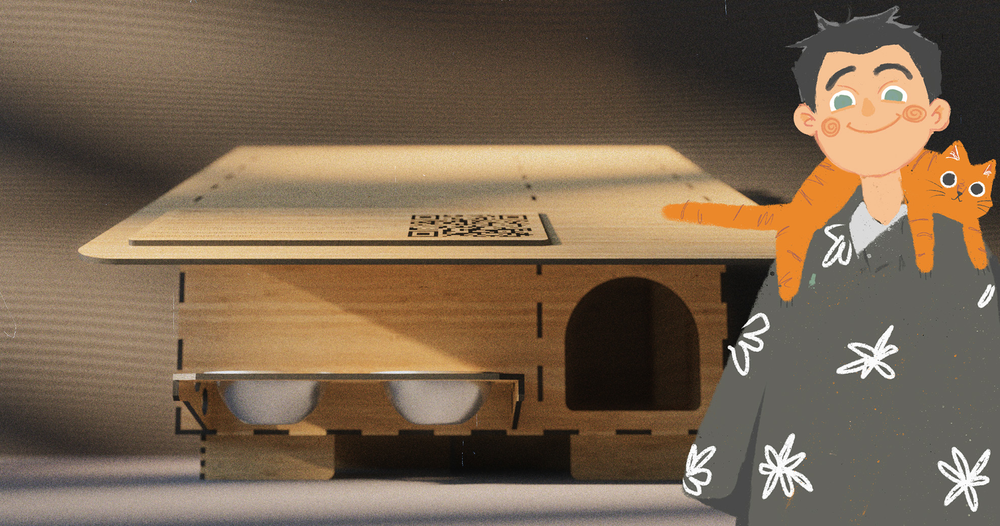
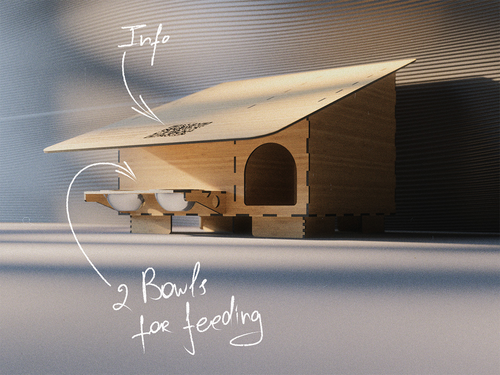
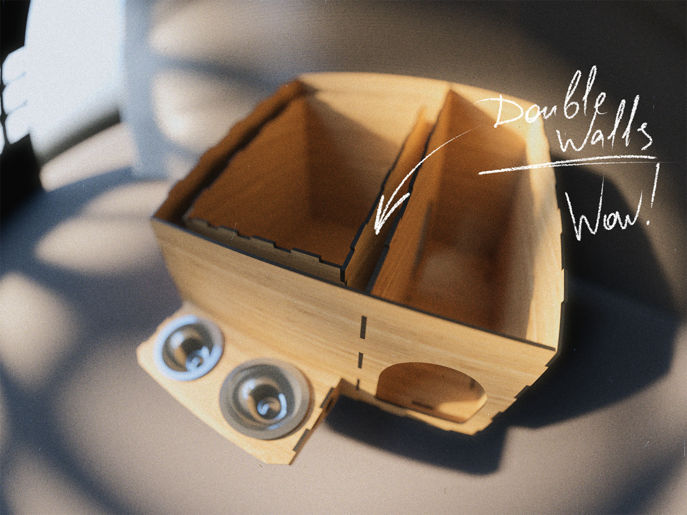
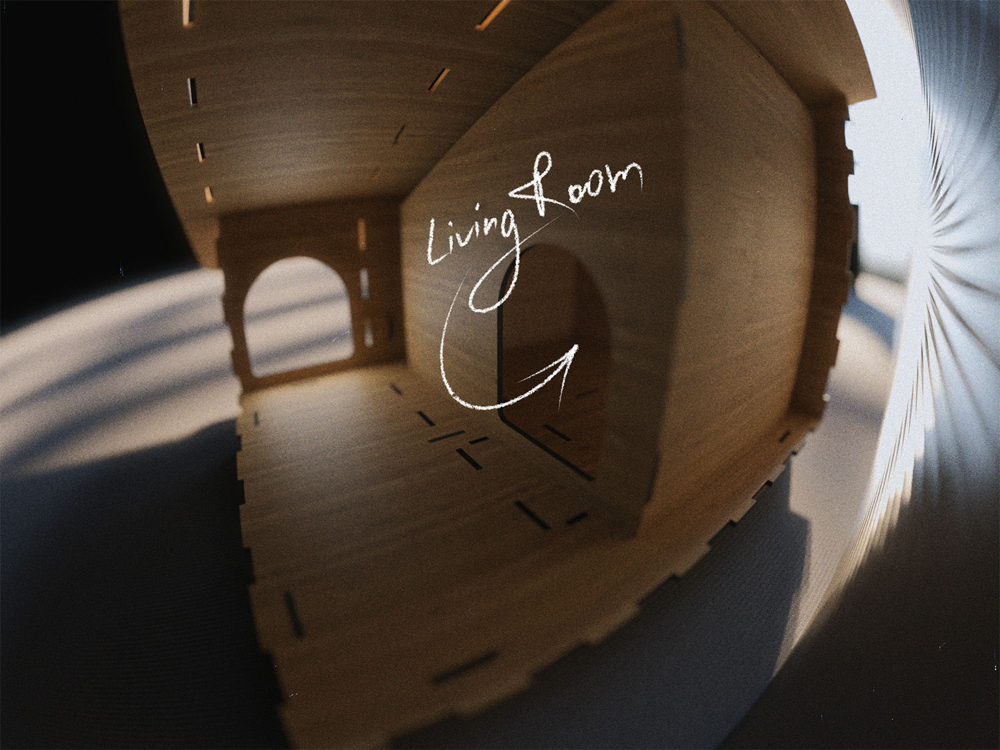

Free drawings of insulated houses for stray cats
[ Back ] [ E-mail Me ]





×
❮
❯
Description
The coming winter might be a little warmer for stray cats, thanks to my new DIY project.
I've designed two cozy and safe shelter options: the compact ‘Cozy’ for one or two purring friends and the spacious ‘Family’, which can warm an entire cat family.
The idea is simple: you download the completely free blueprints and detailed instructions, get access to a laser cutter, and handcraft a warm haven for those who need it most.
Shelters are thoughtfully designed: double walls with eco-friendly insulation protect against freezing temperatures, while the L-shaped entrance keeps wind and rain out.🌪️